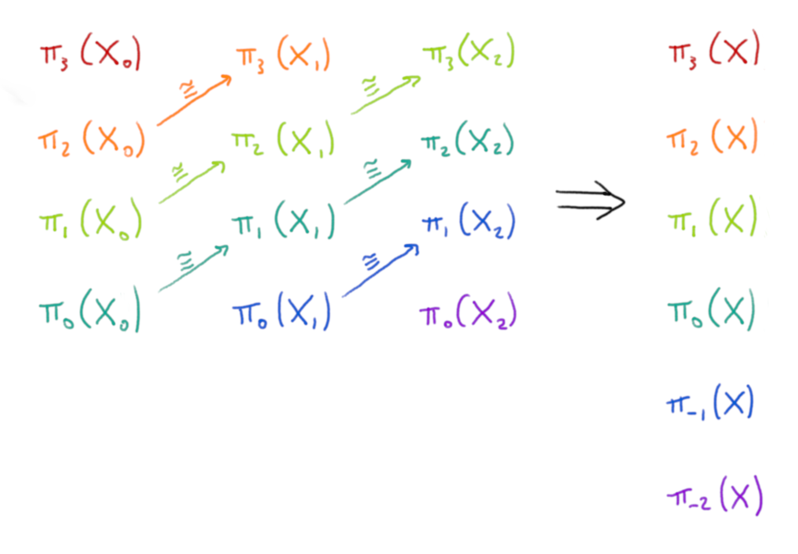

Introduction
Stable homotopy theory is a branch of algebraic topology where the central objects of study are not topological spaces, but something called spectra. Spectra are often more complicated to deal with than spaces, but they are very well suited to applying the techniques of homotopy theory.
Stable homotopy theory can be tricky to motivate, in part because there are lots of different sources of motivation, each requiring different background knowledge to appreciate. No single one of these is a slam-dunk reason to study spectra, but the combination of all of them makes it clear that it’s a very natural piece of mathematics. In the first half of this post I’ll give a justification for considering (Omega-)spectra that doesn’t rely on many prerequisites, but you’ll have to believe me that there are other reasons to consider them to be the right thing to look at.1
In the second part of the post I’ll describe how we use the theory of model categories to understand spectra. In particular this explains why we need to think about sequential spectra as well as Omega-spectra.
Most of these perspectives came from Urs Schreiber’s Introduction to Stable Homotopy Theory notes on the nLab (in particular the section on Sequential Spectra), and I highly recommend taking a look at these if you want to learn the technical details or read further in the subject.
Omega-spectra
I want to show how Omega-spectra can arise naturally, by considering how you might try to define something a bit like a space but with both positive and negative homotopy groups. The \(n\)th homotopy group of a pointed space2 is the set of homotopy classes of based maps from an \(n\)-dimensional sphere to the space. This definition only makes sense when \(n \ge 0\), but we can think of Omega-spectra as an attempt to define an object where negative homotopy groups do make sense. I’m being deliberately vague when I say that they are “a bit like” spaces – spaces aren’t Omega-spectra and Omega-spectra aren’t spaces, but they do behave similarly in some respects.
Let \(Y\) a pointed topological space. An important construction in homotopy theory is the loop space \(\Omega Y\). This is the space of paths in \(Y\) that start and end at the basepoint. Points of \(\Omega Y\) correspond to based loops in \(Y\), and paths in \(\Omega Y\) correspond to homotopies between based loops in \(Y\). So path components of \(\Omega Y\) are in bijection with the first homotopy group of \(Y\): \[\pi_0(\Omega Y) \cong \pi_1(Y)\text{.}\] The same idea works for higher homotopy groups, and we have \[\pi_k(\Omega Y) \cong \pi_{k+1}(Y) \text{.}\] That is, the homotopy groups of \(\Omega Y\) are obtained from those of \(Y\) by throwing away the zeroth one and shifting the rest down a dimension. Now let’s take this idea but do it the other way round. Let \(Y\) be a pointed space, and suppose you have a pointed space \(Z\) and a weak homotopy equivalence \(f : Y \to \Omega Z\) (a weak homotopy equivalence is a map that induces isomorphism on all homotopy groups). Then \(Z\) has the same homotopy groups as \(Y\) but shifted one dimension up, together with a new homotopy group \(\pi_0 Z\) living one dimension below \(\pi_1 Z \cong \pi_0 Y\). In some sense we can think of this data \((Y, Z, f)\) as specifying a space \(Y\) with the addition of a dimension \(-1\) homotopy group \(\pi_0 Z\).
Repeating this construction, we get the definition of an Omega-spectrum.
Definition (Omega-spectrum)
An Omega-spectrum \(X\) consists of a sequence \((X_n)_{n \ge 0}\) of pointed topological spaces, together with weak homotopy equivalences \[f_n : X_n \to \Omega X_{n+1}\] for all \(n\).
Note that \[\pi_k (X_n) \cong \pi_k(\Omega X_{n+1}) \cong \pi_{k+1}(X_{n+1}) \text{.}\] Fix an integer \(k \in \mathbb{Z}\). The group \(\pi_{n+k}(X_n)\) exists for \(n\) sufficiently large that \(n+k \ge 0\), and these groups are isomorphic for different \(n\). We call this the \(k\)th stable homotopy group of \(X\), denoted \(\pi_k(X)\). When \(k \ge 0\) these agree with the usual homotopy groups of \(X_0\), but we also have homotopy groups in negative dimensions!

Sequential spectra and the stable model structure
The next step is to try to do homotopy theory, replacing spaces with Omega-spectra.
What exactly do we mean by “do homotopy theory”? A truly satisfactory answer would probably involve \(\infty\)-categories, but I don’t know enough to do justice to that point of view. Instead we’ll use model categories to gain access to the homotopy theory of spectra.
The point of model categories is to take the tools we use to work with the homotopy theory of spaces, and abstract them so that they can be applied to other scenarios. A model category is a complete and cocomplete category with three specified classes of morphisms called weak equivalences, fibrations and cofibrations (analagous to weak homotopy equivalences of spaces, Serre fibrations and retracts of relative cell complexes). These classes must satisfy certain factorisation and lifting properties. It turns out that this is enough to define a notion of homotopy of maps, and to prove a version of the Whitehead theorem.
We want to study the homotopy category: the category that you get by adding formal inverses to all the weak equivalences. Model categories help us access this more explicitly. It turns out that the homotopy category of a model category is equivalent to the category whose objects are the fibrant-cofibrant3 objects of the model category, and whose morphisms are homotopy classes of maps between the objects. For example, the homotopy category of topological spaces is equivalent to the category of CW-complexes and homotopy classes of maps between them.
Back to Omega-spectra. We have a category of Omega-spectra (where maps between Omega-spectra are collections of maps between the component spaces that commute with the structure maps). We could try to find classes of fibrations, cofibrations and weak equivalences that make this category into a model category. Unfortunately the category of Omega-spectra is not complete, so there’s no way it can be a model category.
Instead we will need to work inside a larger category that is complete and cocomplete. Let’s take a step back. An Omega-spectrum consists of a collection of spaces and maps, satisfying some properties (certain maps are weak homotopy equivalences). Perhaps it would be useful to first study the structure without the properties; to borrow language from programming, we look at the underlying “datatype”. This gives the notion of a sequential spectrum.
Definition (Sequential spectrum)
A sequential spectrum \(X\) consists of a sequence \((X_n)_{n \ge 0}\) of pointed topological spaces, together with structure maps \[f_n : X_n \to \Omega X_{n+1}\] from each space to the loop space of the next. 4
We can define a category \(\text{SeqSpec}\) of sequential spectra. A map \(f: X \to Y\) of sequential spectra is a collection of continuous maps \(f_n : X_n \to Y_n\) that commute with the structure maps, in the sense that we have commutative diagrams \[\require{amscd} \begin{CD} X_n @>{f_n}>> Y_n\\ @VVV @VVV \\ \Omega X_{n+1} @>{\Omega f_{n+1}}>> \Omega Y_{n+1} \text{.} \end{CD}\]
This time we do get a complete and cocomplete category (limits and colimits can both be computed objectwise). Even better, it turns out there’s a natural model structure on \(\text{SeqSpec}\), known as the strict model structure on sequential spectra5.
We’ve now made significant progress. We can define a homotopy category of Omega-spectra by considering the homotopy category of the strict model structure on sequential spectra, and taking the full subcategory spanned by the Omega-spectra. This will turn out to be the right thing to study (usually called the “stable homotopy category”), but at the moment it’s hard to compute with – since the subcategory of Omega-spectra isn’t closed under limits/colimits, it’s hard to define constructions that combine Omega-spectra to build new Omega-spectra.
The key is that a model category really describes the homotopy theory of the fibrant-cofibrant objects. Every object is weakly equivalent to a fibrant-cofibrant object called its fibrant-cofibrant replacement, and for homotopical purposes we can somehow consider these to be the same object. So we would like to construct a model category where all the fibrant-cofibrant objects are Omega-spectra. For this, we use a technique known as left Bousfield localisation. It turns out that if we can define a new model structure on \(\text{SeqSpec}\) with the same cofibrations but more weak equivalences, then the homotopy category associated to the new model structure will be a full (in fact reflective) subcategory of the homotopy category associated to the old model structure. Indeed there is such a model structure on \(\text{SeqSpec}\) where the homotopy category is precisely the subcategory spanned by the Omega-spectra6, the stable homotopy category we mentioned earlier. We call this the stable model structure on sequential spectra. All the fibrant-cofibrant objects are Omega-spectra (in fact, the fibrant objects are precisely the Omega-spectra). So the stable model structure gives us a very natural setting to do homotopy theory with Omega-spectra.
Further study
In the story so far, we’ve met the stable homotopy category, and a useful model category to use to study it. However this is not the end of the story. The stable homotopy category has a monoidal product called the smash product of spectra, making it into a symmetric monoidal category. It is possible to define the smash product on the category of sequential spectra, but it doesn’t have good properties until you pass to the homotopy category. This led to the search for a new model category of spectra that has the same homotopy category, but where the symmetric monoidal structure of the homotopy category comes from a symmetric monoidal structure of the original category. There are various solutions to this problem, such as symmetric spectra and orthogonal spectra, but I’ll leave discussing these for another day! A well-behaved smash product of spectra opens up whole new areas of stable homotopy theory; in particular the so-called “brave new algebra”.
If you have more familiarity with algebraic topology you might find it useful to motivate Omega-spectra based on Brown representability. The Brown representability theorem essentially says that any generalised cohomology theory can be represented by an Omega-spectrum. See e.g. the first chapter of Foundations of Stable Homotopy Theory (Barnes and Roitzheim) for more details.↩︎
A pointed space is a space together with a distinguished point in the space, which we call the basepoint. A map between pointed spaces is said to be a based map if it sends the basepoint to the basepoint.↩︎
We say an object \(X\) of a model category is fibrant if the map to the terminal object \(X \to 1\) is a fibration, and cofibrant if the map from the initial object \(\emptyset \to X\) is a cofibration. The fibrant-cofibrant objects are those that are both fibrant and cofibrant. In the (Quillen) model structure on topological spaces, every space is fibrant, and the cofibrant spaces are the retracts of CW-complexes.↩︎
This definition is more commonly given in terms of structure maps \(\Sigma X_n \to X_{n+1}\) from the reduced suspension of each space to the next space, but by the loop-suspension adjunction such maps are in bijection with maps \(X_n \to \Omega X_{n+1}\), so both perspectives are equivalent.↩︎
Under certain conditions, there’s a natural model structure on the category of functors from a small category to a model category, called the projective model structure. It turns out that \(\text{SeqSpec}\) is equivalent to a category of topologically enriched functors into the category of pointed spaces – see this section of the nLab guide for an explanation. There is a projective model structure on this category of functors, which we call the strict model structure on sequential spectra.↩︎
The theory of Bousfield localisations gives some help in doing this. The most important ingredient is to define an “Omega-spectrification” functor that takes a sequential spectrum and approximates it by an Omega-spectrum.↩︎